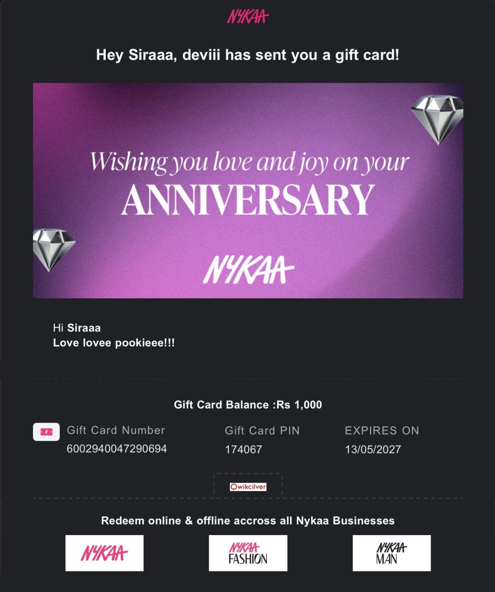
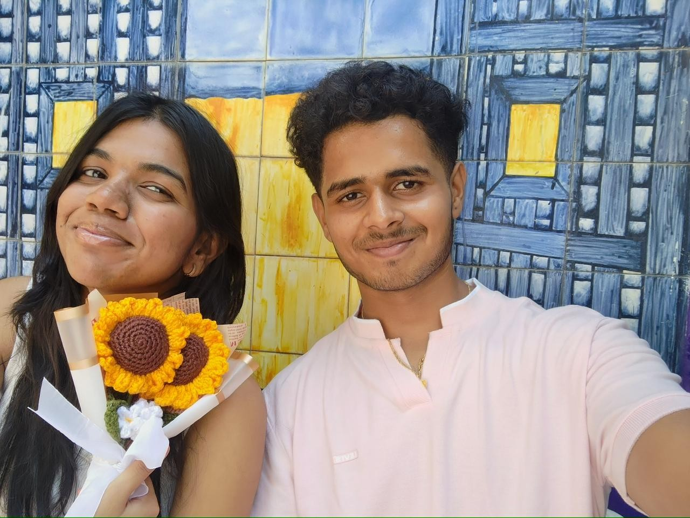
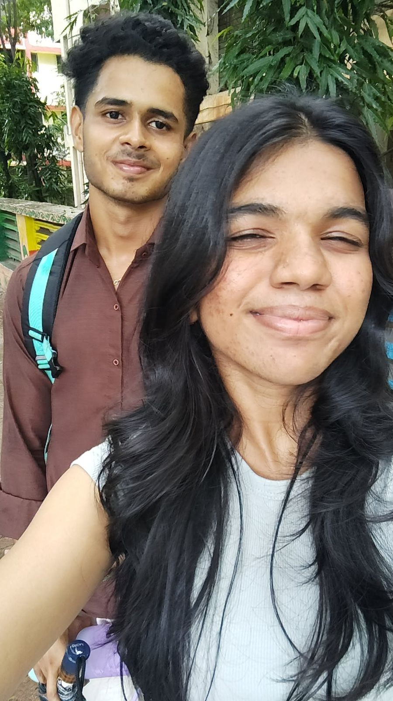
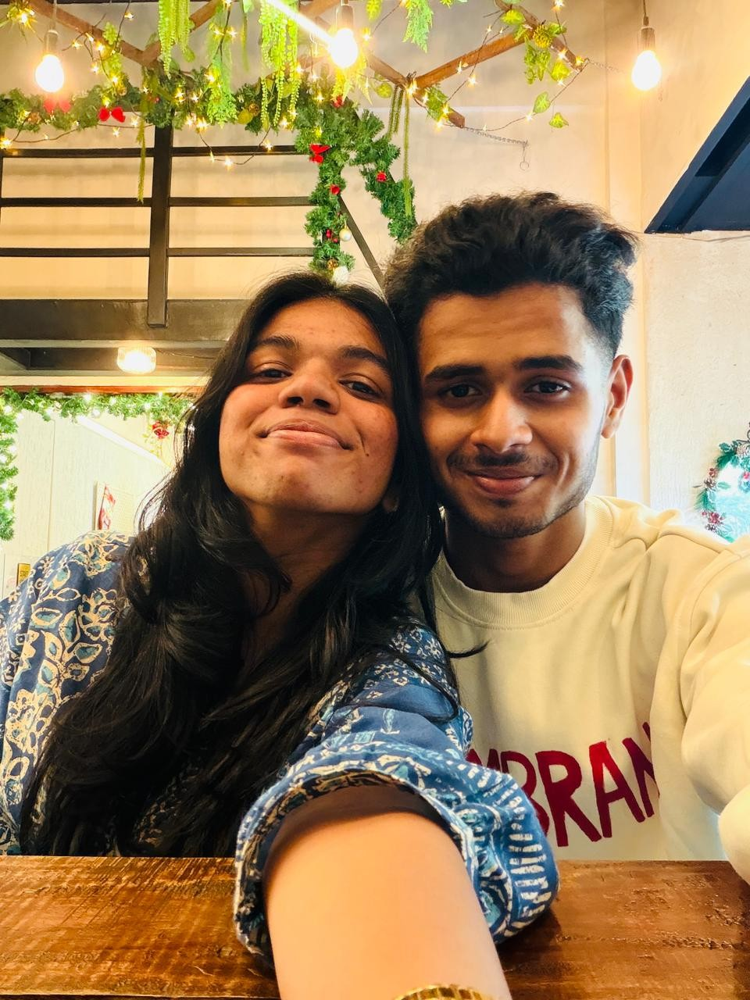
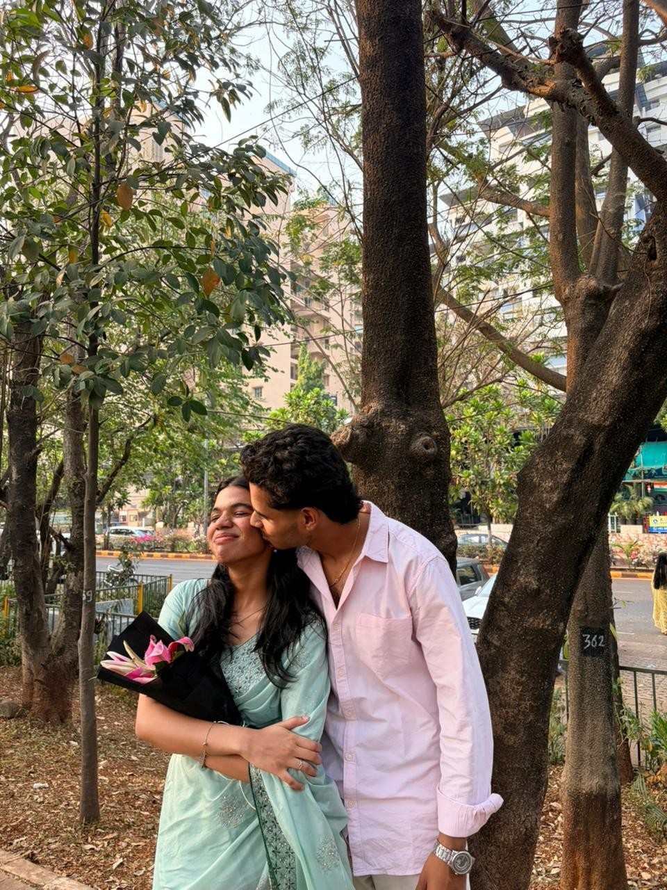
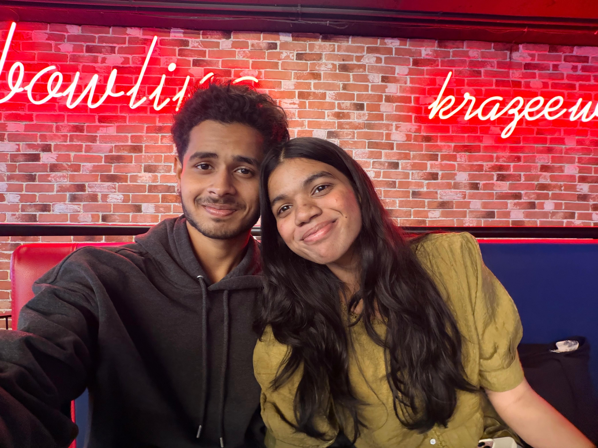
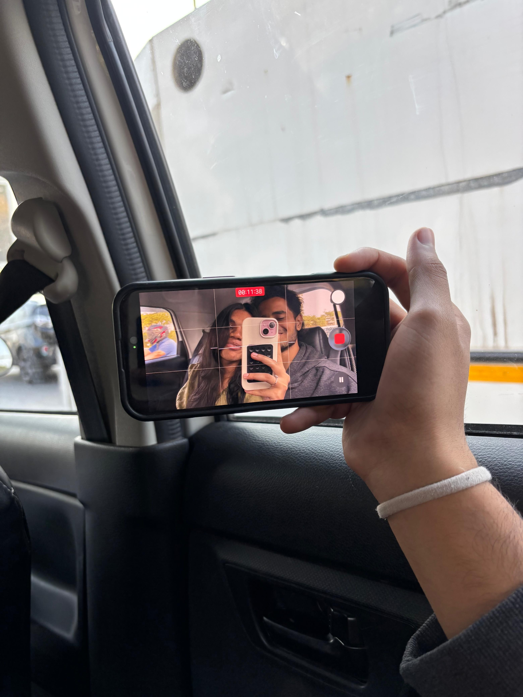
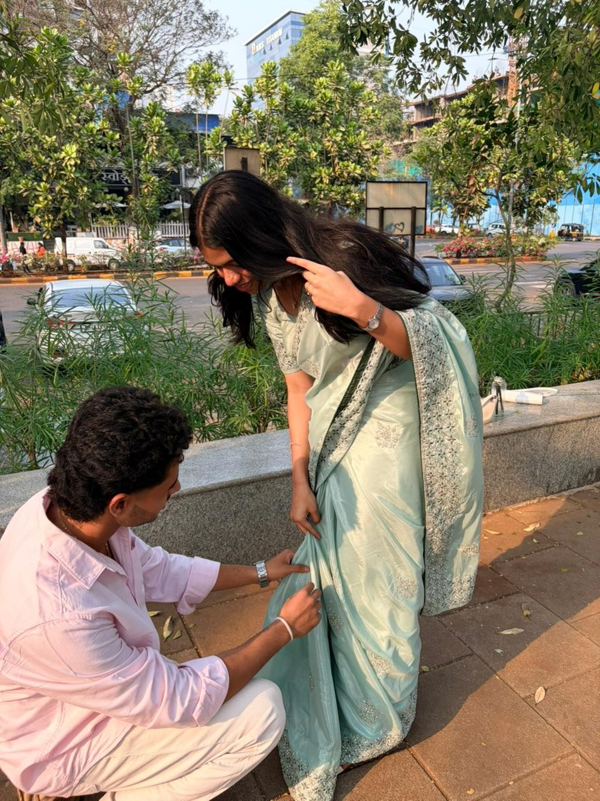
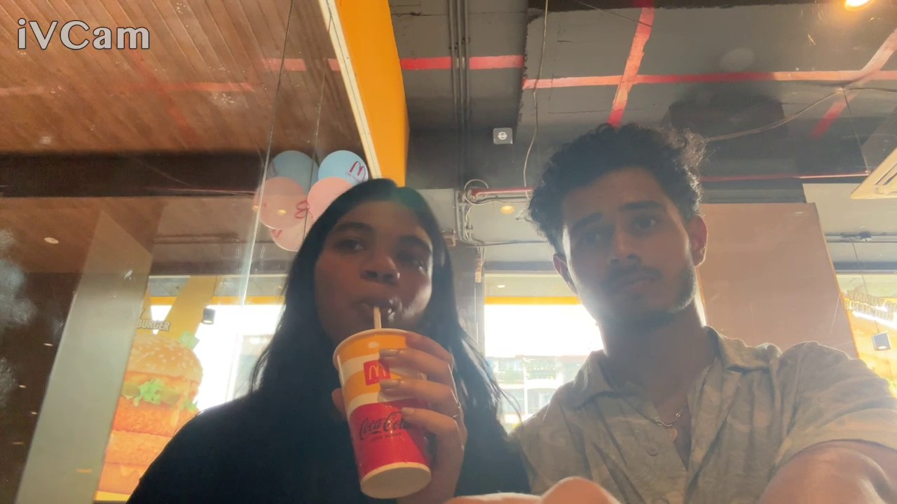

When I Hear These, I Think of You

Ishq Wala Love

MINE

Kalank - Title Track

New Year's Day


Can't forget how scared I was when we first mett

Almost same situation but we started to record our momentsss

Bestesttt Birthday celebration of my entire lifeeee!!!

The video call we had before thiss meet up is as memorable as this kisss!!(The reel toooo;)

Don't worry you'll bowl good just focus on keeping ball in center of the lanee alrightt
A drive where i could feel your breathes, and your warmth while we were arguing over small thingss

Ahhh I know it's quite dramatic still youu were cutest and preetiestt that day(Youu are all the time babygirll!!)

Yeah we both are young dumb kidssssss fr
Click here to hear me read the letter for youuu...❤️
Dear Siraaa,
It’s almost 0007 of 10th may, Sunday, and I’m kinda sleepless, and i feel as I’m almost done with the site i was working on, I’ll now share my thoughts for you, for us, via the letter.
I know it’s virtual, i might be wrong maybe but you mostly like handwritten things, But I’m texting it now and will paste it on the site later on.
Soo first things first, Happiestt onee yearr off being togetherrr princessss!!!! I’m soo much happy to have such a loving, caring, beautiful, energetic, emotional Girll, Just by my Sidee!!! I’ll share in not much words how i’ve felt then, how I’m feeling now> and what feelings are never gonna leave me.
It’s such a beautiful thing to have such a girlfriendd, and you were even my crush back then, and yeah I’m swearing> on you, on everything i have that at some point of life, i couldn’t do nothing about you, but just pray for god for you happiness and well being, but also atleast one single chance for me to show you how much love i’ve had, and i really thought that you’d be just my remembrance, but see, here I have you, Trying fix my mistakes, and also showing you all the love you’ve always deserved, and not letting you goo even for a while. And people say, as a final act of love i’ll let you go, but as my final act of love, I’d be feeling blessed to hold on to you for my entire journey, for my entire life.
I’m happy as you always listen to me, and lately i might be sounding strict and rude but it’s for you and only youu cutie, And I’m again sorry for all the moments you wanted me to be there, like the kerela or even of the train issue where i was playing badminton, i was unable to be there for you. Also i’m so very sorry as I didn’t told you the truth about the period hamper I gave you, I just gave her the list of what all things I want, and she personalised it for me, and i’m sorry for cutting the phone calls whenever my emotions overcame my love, and also sorry if you ever felt that i’ve judged you, of your character, which even when in hell, i’d never do. I’m sorry for all emoji less replies, for all dry texts, but yeah not for calling you kaku or brainless nerd or even schwarmaaaa or even samosaaa and momoss!!!!
The vibe you carry, Princess, is just out of this world for me. Your way to make people laugh, your ability to handle emotions of mine even when you had so much more things going on in your head, it’s just something only someone does when that person’s in love, and yeah i can feel it all!!! I still remember the day we met when i was supposed to give you the invitation card, i was damn shaking the hell out if me, and when we went to Mumbai for our first trip, I was just anxious and nervous like anything. I remember every first bite you had for me, the pics we clicked, that moment when you kept your head on my shoulder, i wish i were there to just hug you and not let you go and just tell you for 50th time how much I love youuu, I hope you won’t get bored hearing mee!!!
Whenever I saw you I just felt, yes she’s the one, she has to be the on, and she’s the only one i needed to fix myself. Even tho you’re not here, i always have your presence always with me, which always brings up discipline, and hard work outtaa me. I remember, truly and perfectly, that feeling of your skin when you touched me the first time, all your kisses, and I really really misss the taste of your lipss but I can’t get over that thought that I kissed myy girll, and your slapss and all the things you gave me. When this all was happening, unknowingly but fortunately, I got to witness so much more things like your hairs,your smile, your eyes and side eyes which felt more than just some random things, they felt likee love!!
Thankyou for everything, Siraa!! Yes i know i’m not supposed to thank you but just keep it, right now i can’t doo much things for you so i’m just trying to make you happy with these few things.
I hope you have a beautiful life ahead with me, and in the most selfish way possible, i hope nobody admires you the way I do. Love you to the universe and back, Myy and only myyy princessss!!Sending you all my huggs and kissesss!!!!!
Your’s and only your’s,
Deviii<3
Ishq Wala Love
MINE
Kalank - Title Track
New Year's Day